Hasta ahora hemos calculado precios, cantidades en kilogramos y litros, la energía que contienen los alimentos en kilocalorías. Para todo ello hemos necesitado utilizar números decimales.
Tengo claro que conoces de sobra los números decimales pero en este apartado vamos a recordar todo lo necesario para para poder reconocerlos y ordenarlos.
1. Los precios y los decimales
Introduce cantidades en la siguiente construcción (el símbolo para separar los céntimos debe ser un punto) y observa las monedas y billetes necesarios para conseguirlas:
Clavis dice: El truco es ir de 10 en 10
- Necesito diez monedas de un euro (unidades) para tener un billete de 10 € (decenas).
- Necesito diez billetes de 10€ (decenas) para tener un billete de 100€ (centenas).
- Necesito diez monedas de 10 céntimos (décimas) para tener una moneda de un euro (unidades).
- Necesito diez monedas de un céntimo (centésimas) para tener una moneda de 10 céntimos (décimas).
Además de para contar dinero o indicar un precio, al llevar a cabo nuestro proyecto solidario tendremos que utilizar los números decimales en el calculo de masas (kg) y capacidades (l) de los diferentes alimentos y nutrientes.
Será por tanto fundamental que entendamos bien cómo funcionan estos números y cómo realizar operaciones con ellos.
Lumen dice: Seguro que te acuerdas
En la parte entera encontramos:
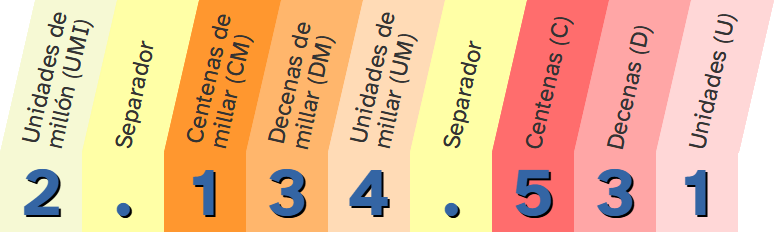
10 U = 1 D
100 U = 10 D = 1 C
1.000 U = 100 D = 10 C = 1 UM
10.000 U = 1.000 D = 100 C = 10 UM = 1 DM
100.000 U = 10.000 D = 1.000 C = 100 UM = 10 DM = 1 CM
1.000.000 U = 100.000 D = 10.000 C = 1.000 UM = 100 CM = 1 UMI
Recuerda que el separador no aporta información, solo facilita la lectura del número.
No debemos confundir el punto de separación de millares con el símbolo de decimales.
OJO: Algunas calculadoras utilizan comas como separador de miles, y los ingleses utilizan un punto, en lugar de una coma, para separar la parte decimal de la parte entera.
Al igual que las cifras a la derecha de la coma, las que están a la izquierda también tienen un valor y un nombre en función de la posición que ocupan
Nº decimal
Un número decimal se compone de dos partes separadas por una coma:
- La parte a la izquierda de la coma se llama parte entera.
- La parte a la derecha de la coma se llama parte decimal.
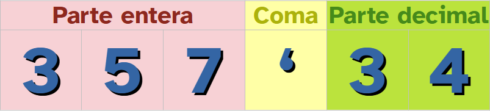
Parte decimal
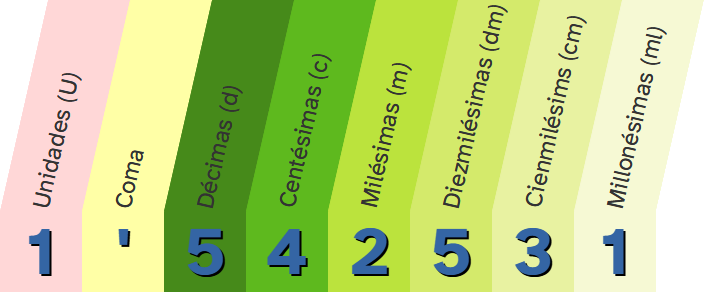
Una unidad se divide en 10 décimas que a su vez se divide en 10 centésimas que a su vez se divide en 10 milésimas y así sucesivamente.
Por lo tanto tendremos:
|
1 U = 10 d |
1 d = 0'1 U = 1/10 U |
La milésima
Ceros
Si añadimos ceros a la derecha de un número decimal no aportan información y pueden ser eliminados.
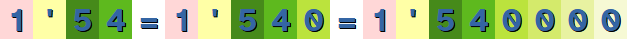
Por lo tanto:
- Una lata de refresco de 0'33 litros y una de 0'330 litros tendrán la misma capacidad.
- Una bandeja de 0'5 kilogramos de manzanas y otra de 0'500 kilogramos de naranjas tendrán la misma masa.
- Una caja de galletas por la hay que pagar 2€ y otra cuyo precio es de 2'00€ costarán lo mismo.
Orden
Para ordenar dos números decimales:
- Comparamos las partes enteras: Será mayor el de mayor parte entera.
- Comparamos las décimas: Si las partes enteras son iguales será mayor el que tenga mayor la cifra correspondiente a las décimas.
- Comparamos las centésimas: Si las partes enteras y las décimas son iguales será mayor el que tenga mayor la cifra correspondiente a las centésimas.
- Comparamos las milésimas: Si las partes enteras, las décimas y las centésimas son iguales será mayor el que tenga mayor la cifra correspondiente a las milésimas.
- Continuamos comparando de izquierda a derecha.
Ejemplo: He comprobado el precio del kilogramo de mandarinas en dos supermercados, en MercaRoma costaba 1'54 € y en CarreNine 1'55 € ¿Dónde está más barato?
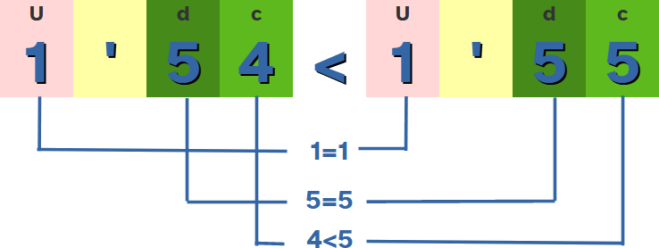
Después de comparar ambos números decimales comprobamos que en MercaRoma es más barato, en concreto 0'01 € (un céntimo) más.
Representación
Los números decimales se representan en la recta numérica.
Una vez que tenemos representados en la recta numérica los números naturales:
|
\pmb{\mathbb N} |
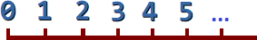 |
...y los números enteros:
|
\pmb{\mathbb Z} |
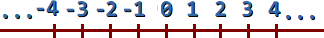 |
... es el momento de representar un número decimal.
Para ello, tenemos que ubicarlo entre los dos números enteros donde está comprendido.
Se divide el segmento que une estos dos números enteros (menor y mayor entero que el número decimal) en 10 partes iguales para las décimas, 100 partes iguales para las centésimas,...y así sucesivamente, hasta llegar al número decimal.
En la práctica, procederíamos como sigue:
Para representar, por ejemplo, el número decimal 1'9 tomaríamos el segmento de la recta numérica comprendido entre 1 y 2.
Lo dividimos en 10 partes (colocamos 9 "rayitas") ya que el número decimal llega hasta las décimas y nos quedamos con la novena.
Así quedaría representado el número 1'9.
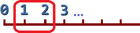
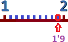
Si quisiéramos representar el número 2'57 nos situaríamos entre los dos números enteros donde se encuentra este número, en este caso entre 2 y 3.
Luego seguiríamos con las décimas y nos situaríamos entre 2'5 y 2'6 ya que el número decimal se encuentra entre estos dos y llega hasta las centésimas.
Dividiríamos este segmento en 10 partes y nos quedaríamos con la séptima.
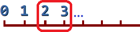
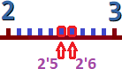
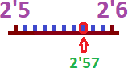
2. Organizamos la información
Para llegar a una meta, es conveniente que seas un buen o buena estratega. Es decir, tener métodos, técnicas o trucos para llegar antes o de forma más fácil donde tú quieres.
Ahora te voy a enseñar una estrategia, ¡Aprovéchala para alcanzar tu reto!
Existen técnicas y consejos que son útiles para ordenar la información, y de esta manera facilitar su comprensión. Además nos ayudarán a resolver con éxito los ejercicios planteados.
Para ello te animo a que te descargues la ficha que posibilitará que compruebes la información que has obtenido sobre los precios y los decimales.
Puedes descargar la ficha y rellenarla. Acuérdate de guardarla cuando acabes.
3. ¿Tienes claro cuál es el mayor?

A continuación tendrás que demostrar que eres capaz de saber que producto es más caro, que bolsa pesa más,...